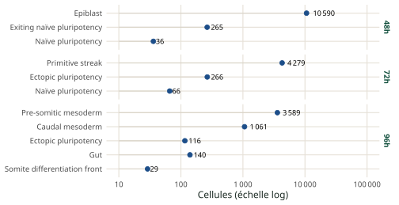
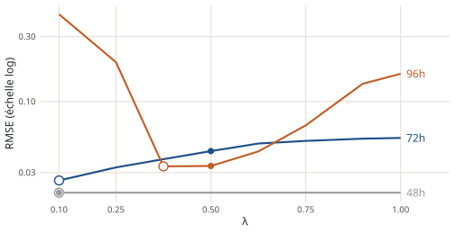
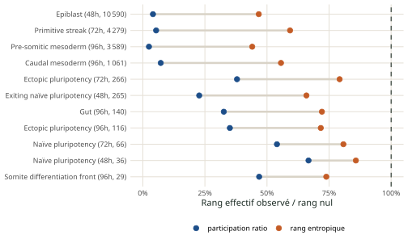
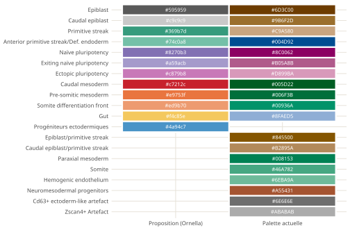

DeCovarT : justifier la sélection des gènes et la régularisation
Retour sur les figures 1 et 4 du manuscrit, pour Elias, Marielle et Anaïs
Pourquoi ce document. Il corrige et complète un premier brouillon rédigé avec ChatGPT. Il répond aux questions soulevées par les figures 1 (pipeline) et 4 (application aux gastruloïdes) du manuscrit : pourquoi ce filtre sur les gènes, pourquoi ce test, comment choisir la régularisation des covariances. Les chiffres viennent des sorties locales du livre de reproductibilité, extraites par scripts/extract_local_results.R. Dans la version HTML, les figures interactives se manipulent avec des curseurs ; la version PDF en montre une position fixe.
Code couleur.
- Passage important.
- Encadré orangé : un désaccord de Claude Code, l’assistant qui a relu le brouillon, avec mon raisonnement ou avec la version ChatGPT. Je les laisse visibles pour qu’on en discute.
Les équations nouvelles sont recalculées dans le registre SymPy du dépôt (answer-cardamomOT/verification/, identifiants V49a à V49l, tous validés ; V49b confirme l’erreur du brouillon sur le modèle Gamma–Poisson).
1 Philosophie générale du pipeline
DeCovarT choisit des gènes qui permettent d’estimer, de façon stable et interprétable, la composition cellulaire d’un bulk RNA-seq à partir d’une référence single-cell. Cette liste est plus courte que celle des gènes différentiellement exprimés : un bon marqueur pour annoter un cluster n’est pas forcément un bon gène pour déconvoluer.
DeCovarT utilise les moyennes d’expression de chaque population, mais aussi leurs variances et leurs covariances : les gènes d’un même programme transcriptionnel ne sont pas traités comme des sources d’information indépendantes. Le modèle retenu pour les données de Suppinger et al. (2023) est
\[ \boldsymbol{y}_{\cdot i}\mid\boldsymbol{p}_{\cdot i} \sim\mathcal{N}_G\bigl(c_i\tilde{\boldsymbol{\mu}}\boldsymbol{p}_{\cdot i},\; \phi_i\boldsymbol{S}_W(\boldsymbol{p}_{\cdot i})\bigr), \qquad \boldsymbol{S}_W(\boldsymbol{p})=\sum_{j}p_j\boldsymbol{\Sigma}_{W,j}, \tag{1}\]
avec \(\boldsymbol{y}_{\cdot i}\) le profil bulk de l’échantillon \(i\) sur \(G\) gènes, \(\boldsymbol{p}_{\cdot i}\) ses proportions sur \(J\) types, \(\tilde{\boldsymbol{\mu}}\) la matrice \(G\times J\) des profils moyens de référence, \(\boldsymbol{\Sigma}_{W,j}\) la covariance entre cellules du type \(j\), et \(c_i\), \(\phi_i\) deux échelles libres. Les notations complètes sont dans la note de réponse à Elias et la page de notation.
Figure 1 résume les étapes : contrôle qualité et presence gate, sélection statistique, moments de référence régularisés, puis déconvolution.
Figure 1 du manuscrit : le pipeline DeCovarT appliqué aux gastruloïdes (a) Les trois filtres de la sélection de gènes ; (b) les moments de référence et le shrinkage de la covariance ; (c) le modèle de bruit du bulk ; (d) le plan Wnt standard et précoce. Vecteur du manuscrit ; aperçu PNG.

2 Contrôle qualité : pourquoi écarter les marqueurs « parfaits » ?
2.1 Marqueur biologique ou marqueur statistiquement parfait
Un marqueur biologique caractérise une population ou un programme biologique. Un marqueur parfait, au sens statistique employé ici, est exprimé dans une seule population et totalement absent des autres. La presence gate exclut plus largement tout gène qui n’est pas détecté dans au moins deux cellules de chaque population retenue à un temps donné.
Les marqueurs enrichis et les gènes différentiels restent donc éligibles : seules certaines configurations d’expression sont écartées.
2.2 Arguments statistiques
Une variance nulle rend certaines procédures dégénérées. DeCovarT décrit chaque population par un vecteur de moyennes et une matrice de covariance. Un gène jamais exprimé dans une population y a une moyenne et une variance empiriques nulles (gène A du tableau 1). Sa corrélation avec les autres gènes n’est pas définie, puisqu’elle divise par un écart-type nul.
| Gène | Cellule 1 | Cellule 2 | Cellule 3 | Cellule 4 | Variance |
|---|---|---|---|---|---|
| A | 0 | 0 | 0 | 0 | nulle |
| B | 0 | 0 | 0 | 10 | positive, mais portée par une cellule |
| C | 2 | 5 | 1 | 8 | positive |
Une seule cellule ne suffit pas. La variance du gène B existe, mais elle repose sur une seule cellule. Deux gènes exprimés uniquement dans la même cellule ont une corrélation empirique égale à 1, quels que soient leurs niveaux : un événement technique isolé passerait pour de la co-expression. D’où le seuil minimal de deux cellules positives par population. C’est une condition minimale de stabilité, pas une garantie que la variance soit bien estimée.
Conséquences pour la covariance. Une variance nulle annule la ligne et la colonne correspondantes de \(\boldsymbol{\Sigma}_{W,j}\), qui devient singulière. Or l’inverse et le déterminant de équation 1 entrent dans la vraisemblance. Le shrinkage de Schäfer et Strimmer (2005), qui contracte les corrélations en gardant les variances, ne répare pas une variance initialement nulle. La presence gate ne suffit pas non plus à rendre la covariance inversible : avec plus de gènes que de cellules, la covariance empirique est toujours singulière, d’où la régularisation de la section 6.
Désaccord de Claude Code : le test omnibus n’est pas le problème, les fold changes le sont.
Le brouillon affirme qu’un gène nul dans une population empêche le test de Welch. Ce n’est pas exact pour notre pipeline. Le test omnibus porte sur les résidus de Pearson du modèle nul (équation 7), dont la valeur attendue dépend de la profondeur \(s_c\) de chaque cellule : un gène nul dans un type y a des résidus \(-\sqrt{V(\hat m_{gc})}\) qui varient d’une cellule à l’autre, donc une variance non nulle. Le rapport de vraisemblance NB reste lui aussi valide quand un type est entièrement nul, à condition que le gène soit exprimé ailleurs.
Sans shrinkage des log fold changes (LFC), que nous ne voulons pas, le paramètre \(\eta_j=\log\mu_j\) d’un type entièrement nul part vers \(-\infty\) : l’optimiseur s’arrête à une borne arbitraire et l’erreur standard explose. Le contraste \(\Delta_j\) (équation 12), un seuil de fold change de type TREAT (McCarthy et Smyth 2009) et le classement par taille d’effet perdent alors leur sens. DESeq2 contourne ce problème par un shrinkage des LFC (Love et al. 2014) ; la vignette note aussi que le test de Wald échoue près de ces types nuls (effet Hauck–Donner, Yee (2022)). La justification solide de la presence gate est donc le stade post-hoc et l’estimation de la covariance, pas le test omnibus.
Désaccord de Claude Code : ce que coûte la presence gate, à gènes indépendants.
Supposons des gènes indépendants (covariance diagonale) et deux types \(A\) et \(B\). Dans le modèle gaussien équation 1, l’information de Fisher sur \(p_A\) apportée par le gène \(g\) vaut
\[ I_g(p_A)=\frac{c^{2}\,(\mu_{gA}-\mu_{gB})^{2}}{\phi\,v_g(p_A)} +\frac12\left(\frac{\sigma^{2}_{gA}-\sigma^{2}_{gB}}{v_g(p_A)}\right)^{2}, \qquad v_g(p_A)=p_A\sigma^{2}_{gA}+(1-p_A)\sigma^{2}_{gB}. \tag{2}\]
Pour un marqueur parfait de \(A\) (\(\mu_{gB}=\sigma^{2}_{gB}=0\)), \(v_g=p_A\sigma^{2}_{gA}\) et les deux termes croissent comme \(1/p_A\) et \(1/p_A^{2}\). Les marqueurs parfaits sont donc les gènes les plus informatifs précisément pour les populations rares, et la presence gate les retire. Le panel penche alors vers les types abondants (figure 2).
Les données nuancent cependant ce constat (tableau 2). Les gènes écartés par la condition par type sont surtout des gènes non détectés dans la population la plus petite : 3 872 gènes à 48 h ne manquent qu’aux 36 cellules « naïve pluripotency », 2 171 à 96 h qu’aux 29 cellules du « somite differentiation front ». À l’inverse, les 2 188 gènes détectés uniquement dans l’épiblaste (10 590 cellules) sont surtout des gènes faibles que seul un grand effectif permet de voir. Beaucoup de ces exclusions reflètent la puissance de détection, pas une absence biologique.
Piste à discuter : appliquer la presence gate au seul stade post-hoc (contrastes, classement) et garder ces gènes dans le panel de déconvolution avec un plancher de variance.
scored_slots.rds (copie locale).
| Temps | Type | Cellules | Présents dans ce seul type | Absents du seul type | Échouent dans ce type |
|---|---|---|---|---|---|
| 48h | Epiblast | 10 590 | 2 188 | 0 | 0 |
| 48h | Exiting naïve pluripotency | 265 | 0 | 16 | 2 204 |
| 48h | Naïve pluripotency | 36 | 0 | 3 872 | 6 060 |
| 72h | Primitive streak | 4 279 | 760 | 0 | 0 |
| 72h | Ectopic pluripotency | 266 | 0 | 43 | 803 |
| 72h | Naïve pluripotency | 66 | 0 | 2 362 | 3 122 |
| 96h | Pre-somitic mesoderm | 3 589 | 43 | 0 | 18 |
| 96h | Caudal mesoderm | 1 061 | 0 | 0 | 87 |
| 96h | Gut | 140 | 0 | 105 | 1 651 |
| 96h | Ectopic pluripotency | 116 | 5 | 110 | 1 683 |
| 96h | Somite differentiation front | 29 | 0 | 2 171 | 4 339 |
Une population absente du bulk. Le brouillon disait qu’un marqueur parfait rend la vraisemblance « non bornée » quand la population disparaît du mélange. Il faut préciser le sens.
Désaccord de Claude Code : non bornée, mais dans quel sens ?
Pour le maximum de vraisemblance, seule la borne supérieure compte. Une log-vraisemblance qui tend vers \(-\infty\) au bord du simplexe est non bornée inférieurement : elle agit comme une barrière et le maximum reste à l’intérieur. La dégénérescence redoutée est l’inverse, un supremum infini.
Prenons la vraisemblance profilée en \(\phi\),
\[ \ell(\boldsymbol{p})=-\frac{G}{2}\log\hat\phi(\boldsymbol{p})-\frac12\log\det\boldsymbol{S}_W(\boldsymbol{p}), \qquad \hat\phi(\boldsymbol{p})=\frac{1}{G}\,\boldsymbol{r}^{\top}\boldsymbol{S}_W(\boldsymbol{p})^{-1}\boldsymbol{r}, \tag{3}\]
avec \(\boldsymbol{r}=\boldsymbol{y}-c\tilde{\boldsymbol{\mu}}\boldsymbol{p}\), et un marqueur parfait \(g\) de \(A\) dont la variance modélisée vaut \(\varepsilon=p_A\sigma^{2}_{gA}\to0\).
- Si le bulk exprime ce marqueur (\(y_g>0\)), \(r_g^{2}/\varepsilon\to\infty\), donc \(\hat\phi\sim y_g^{2}/(G\varepsilon)\), et \(\ell\approx-\tfrac{G-1}{2}\lvert\log\varepsilon\rvert\to-\infty\) : c’est une barrière qui repousse \(p_A\) du bord.
- Si le bulk vaut exactement 0 sur ce marqueur, le résidu s’annule avec \(p_A\) et \(-\tfrac12\log\varepsilon\to+\infty\) : la vraisemblance n’est plus bornée supérieurement.
La vraisemblance n’est donc non bornée (au sens gênant) que si le bulk vaut exactement 0 sur un marqueur parfait. Le cas reste hypothétique ici, puisque la presence gate écarte déjà ces gènes (figure 3).
Sources : presence gate, résidus de Pearson, filtre dans le livre.
2.3 Identifiabilité et corrections entre plateformes
Un modèle est identifiable si deux valeurs différentes de ses paramètres ne produisent jamais la même loi des données. Avec une infinité de données, on retrouverait alors la vraie composition.
L’expression bulk moyenne d’un marqueur parfait de \(A\) dépend de sa moyenne de référence, de \(p_A\), et d’un éventuel facteur multiplicatif propre au gène, qui corrige les différences entre single-cell et bulk. Si ce facteur est libre, deux compositions différentes peuvent produire exactement le même bulk (figure 4) : on ne sait plus si le signal vient de la composition ou de l’efficacité de mesure du gène.
Trois nuances :
- Sans facteur libre par gène, comme dans
DeCovarT, les marqueurs parfaits sont très informatifs et ne rendent pas le modèle non identifiable. Le problème apparaît avec un facteur libre par gène, comme dans MEAD (Xie et al. 2026). - Une correction connue (longueur des gènes, par exemple), appliquée de la même façon aux données et aux moments, ne détruit pas l’identifiabilité.
- Les seconds moments, qu’exploite
DeCovarT, peuvent rétablir l’identifiabilité quand les seules moyennes ne suffisent pas.
Notre intérêt est de ne pas dépendre de gènes dont l’interprétation repose sur une hypothèse forte de comparabilité entre plateformes. Le contre-exemple complet est dans la note à Elias, section « Faut-il garder les gènes marqueurs parfaits ? ».
2.4 Arguments biologiques et technologiques
En pratique, un marqueur parfait est sensible à l’efficacité de capture de chaque technologie, à la profondeur et aux non-détections, à l’ARN ambiant, aux doublets et aux erreurs d’annotation, et à l’état de différenciation. Un zéro single-cell n’implique pas l’absence du transcrit. Sans facteur de calibration par gène, un marqueur très spécifique et peu variable pèse lourd dans l’estimation : un biais de mesure sur ce gène passe directement dans la composition. Ce problème de transfert est documenté par DeMixSC (Guo et al. 2023) et Bisque (Jew et al. 2020) ; MuSiC privilégie les gènes stables entre cellules et entre individus (Wang et al. 2019).
Nous cherchons donc un compromis entre cinq propriétés (tableau 3).
| Propriété | Objectif |
|---|---|
| Pouvoir discriminant | Distinguer les populations |
| Stabilité intra-population | Ne pas dépendre de quelques cellules atypiques |
| Transférabilité | Résister aux différences entre plateformes |
| Stabilité numérique | Estimer les moments sans dégénérescence |
| Complémentarité | Apporter une information utile en combinaison avec les autres gènes |
2.5 Perspective : réintégrer les marqueurs dans un cadre bayésien
On pourrait réintégrer ces marqueurs en modélisant l’incertitude des zéros. Si un gène n’est détecté dans aucune cellule d’une population, son taux d’expression \(r\) reçoit un a priori \(\mathrm{Gamma}(\alpha,\beta)\) et les comptes suivent une loi de Poisson. Après zéro compte pour une exposition totale \(L\) (somme des tailles de librairie de la population),
\[ \mathbb{E}(r\mid X=0)=\frac{\alpha}{\beta+L}. \tag{4}\]
Cette moyenne n’est plus nulle et diminue quand l’exposition augmente (figure 5) : plus on a séquencé sans voir le gène, plus son expression vraie est probablement faible.
Il faudrait distinguer trois phénomènes : la variabilité biologique entre cellules, l’incertitude sur les paramètres d’expression et le bruit de mesure. Un modèle bayésien hiérarchique, avec des a priori sur les moyennes, les dispersions et les efficacités de capture, s’y prête bien. Un plancher de variance ou une vraisemblance pénalisée resteraient des options fréquentistes. Je préfère développer cette extension plus tard plutôt que d’ajouter des pseudocomptes sans justification probabiliste.
2.6 Seuils de présence
Le filtre est appliqué à chaque temps (tableau 4).
presence_gate() et scored_types() du livre).
| Critère | Seuil |
|---|---|
| Cellules exprimant le gène, tous types confondus | ≥ 20 |
| Cellules exprimant le gène dans chaque type | ≥ 2 |
| Variance empirique dans chaque type | strictement positive |
| Cellules pour conserver une population | ≥ 20 |
Le premier critère suit Luecken et Theis (2019), qui proposent de fixer le nombre minimal de cellules exprimant un gène à la taille de la plus petite population d’intérêt. C’est une règle pragmatique, pas un seuil universel. Les deux critères suivants sont propres à DeCovarT.
Après ces filtres, 11 couples type × temps sont conservés (figure 6). Trois populations sont exclues : l’artefact Zscan4+ à 48 h (44 cellules), l’artefact Cd63+ ectoderm-like à 72 h (100 cellules) et « exiting naïve pluripotency » à 72 h (8 cellules).

tier_01/cell_counts.csv.
Le déséquilibre est considérable : 10 590 cellules d’épiblaste contre 36 cellules « naïve pluripotency » à 48 h. Exclure une population rare a aussi un coût : si elle est présente dans le bulk, son expression sera attribuée aux populations conservées. Les compositions estimées sont donc relatives au référentiel retenu.
3 Sélection statistique des gènes en deux temps
3.1 Pourquoi pas les méthodes classiques ?
La logique s’inspire de la cross-cell consistency de MuSiC (Wang et al. 2019) : un gène utile varie fortement entre populations et peu au sein de chacune. Les gènes hautement variables (HVG) ne suffisent pas : un gène peut varier à cause du cycle cellulaire, d’un stress ou d’un artefact, sans distinguer les populations. Je cherche à séparer la variabilité liée à l’identité cellulaire de la variabilité résiduelle.
3.2 Première étape : modéliser l’expression
Un modèle de comptage. Pour chaque gène et chaque temps, deux modèles linéaires généralisés binomiaux négatifs (NB), à lien logarithmique, sont ajustés avec glmGamPoi (Ahlmann-Eltze et Huber 2020). Le modèle NB autorise une variance supérieure à la moyenne :
\[ \operatorname{Var}(x_{gc})=m_{gc}+\frac{m_{gc}^{2}}{\psi_g}, \tag{5}\]
alors que la loi de Poisson impose \(\operatorname{Var}=m\). Plus la dispersion \(\psi_g\) est petite, plus la variance excède la moyenne (figure 7).
La profondeur de séquençage. La taille de librairie \(s_c\) entre comme offset logarithmique de coefficient 1 : une cellule séquencée deux fois plus profondément a deux fois plus de comptes attendus. Les deux modèles sont
\[ M_0:\ \log m_{gc}=\beta_{0g}+\log s_c, \qquad M_1:\ \log m_{gc}=\beta_{0g}+\beta_{g,j(c)}+\log s_c, \tag{6}\]
avec \(j(c)\) le type de la cellule \(c\). La dispersion est estimée gène par gène par maximum de vraisemblance, sans shrinkage entre gènes pour le rapport de vraisemblance et le test de Welch. La taille de librairie mélange des effets techniques et une vraie différence de taille du transcriptome : le modèle teste une expression relative à cette exposition.
Décomposer la variabilité. Le résidu de Pearson du modèle nul,
\[ r_{gc}=\frac{x_{gc}-\hat m_{gc}}{\sqrt{V(\hat m_{gc})}}, \tag{7}\]
est positif quand la cellule exprime le gène plus que ne le prévoient le modèle nul et sa profondeur. Je ne tronque pas ces résidus, contrairement à SCTransform (Hafemeister et Satija 2019; Lause et al. 2021) : les valeurs extrêmes viennent souvent des cellules informatives d’une population rare. Leur variabilité se décompose en
\[ SS_{\text{total}}=SS_{\text{inter-types}}+SS_{\text{intra-types}}, \tag{8}\]
comme dans une ANOVA. La taille d’effet est la part de déviance expliquée par le type,
\[ R^{2}_{D}=1-\frac{D(M_1)}{D(M_0)}. \tag{9}\]
Significativité et taille d’effet sont deux notions distinctes : avec des milliers de cellules, un effet minuscule devient significatif sans être utile à la déconvolution.
Source : vignette 3.1, modèle nul.
3.3 Quatre tests pour une même question
La question est : le gène a-t-il une moyenne différente dans au moins deux populations ? C’est un test omnibus, qui ne dit pas encore quelle population est responsable. Les quatre tests diffèrent par leur statistique et leur loi de référence (tableau 5).
| Test | Statistique et loi de référence | Hypothèse principale |
|---|---|---|
| Rapport de vraisemblance (LR) | Différence de déviance, loi du χ² | Modèle NB bien spécifié |
| Quasi-vraisemblance F | Déviance ajustée, loi F | Dispersion résiduelle commune estimable |
| ANOVA sur expression transformée | Rapport de sommes de carrés, loi F | Variances à peu près égales entre types |
| G de Welch par permutation | Comparaison studentisée des résidus, loi empirique par permutation | Échangeabilité des résidus sous l'hypothèse nulle |
- Le rapport de vraisemblance compare directement \(M_0\) et \(M_1\) et reste puissant quand le modèle est juste. Si la dispersion varie fortement entre populations sans être modélisée, sa loi de référence est fausse.
- Le \(F\) de quasi-vraisemblance (Lund et al. 2012) corrige l’incertitude sur la dispersion, mais une dispersion unique par gène ne décrit pas des populations d’hétérogénéités très différentes.
- L’ANOVA sur expression transformée est intuitive, mais une transformation logarithmique n’égalise pas les variances, et le test est mal calibré quand hétéroscédasticité et effectifs déséquilibrés se combinent.
- Le \(G\) de Welch par permutation (WELCH 1951) autorise une variance par population. Chaque moyenne de type est pondérée par \(w_j=C_j/s_j^{2}\) (\(C_j\) cellules, variance \(s_j^{2}\)) :
\[ G=\frac{\dfrac{1}{J-1}\sum_j w_j(\bar r_j-\bar r_w)^{2}} {1+\dfrac{2(J-2)}{J^{2}-1}\sum_j\dfrac{(1-w_j/W)^{2}}{C_j-1}}, \qquad W=\sum_j w_j,\quad \bar r_w=\frac{1}{W}\sum_j w_j\bar r_j . \tag{10}\]
Une population très variable ou peu représentée a une moyenne moins précise, donc un poids plus faible.
3.4 Pourquoi combiner Welch et permutations ?
Les permutations construisent la loi de référence à partir des données : les expressions restent fixes, seules les étiquettes de type sont redistribuées, à l’intérieur de chaque lot. Avec \(B\) permutations,
\[ p_g=\frac{1+\#\{G^{*}_g\geq G_g\}}{B+1}. \tag{11}\]
Trois avantages : pas besoin que les résidus soient gaussiens (ils restent asymétriques pour les gènes faibles) ; la studentisation de Welch protège contre des variances différentes ; les permutations peuvent respecter des blocs. À 48 h, deux lignées sont présentes (B-S et SBR), et les étiquettes sont permutées au sein de chaque lignée.
Pourquoi ne pas permuter une simple ANOVA ? Parce que la permutation ne corrige pas l’hétéroscédasticité. Si deux populations ont la même moyenne mais des variances différentes, leurs cellules ne sont pas échangeables, et une statistique \(F\) non studentisée a une loi nulle qui dépend des variances inconnues. \(G\) reste approximativement pivotale (Chung et Romano 2013; Winkler et al. 2014; Freedman et Lane 1983). figure 8 le montre sur un jouet gaussien.
À ma connaissance, l’originalité tient à la combinaison : résidus de Pearson d’un modèle NB avec offset, \(G\) de Welch, permutations stratifiées, sélection hiérarchique et application à une déconvolution multivariée. Les tests studentisés par permutation existent déjà (Chung et Romano 2013) : je revendique leur intégration dans ce pipeline, pas l’invention du test.
3.5 Validation par simulation
La vignette simule 1 000 gènes dans quatre populations très déséquilibrées (2 000, 300, 60 et 25 cellules) : 600 gènes nuls de dispersion commune, 300 gènes nuls dont la dispersion diffère entre types (moyennes identiques), et 100 gènes réellement différentiels. Le scénario hétéroscédastique compte : un gène ne doit pas être sélectionné parce qu’une population est plus hétérogène qu’une autre.
Sous l’hypothèse nulle hétéroscédastique, le rapport de vraisemblance, la quasi-vraisemblance et l’ANOVA rejettent 15 à 19 % des gènes au seuil de 5 %, le \(F\) permuté 18 %, le \(G\) de Welch permuté 6 %. Après Benjamini–Hochberg à 5 % (Benjamini et Hochberg 1995), le rapport de vraisemblance fait 105 découvertes (FDR empirique 19 %, puissance 85 %) et le Welch permuté 43 (FDR 5 %, puissance 41 %). Notre choix repose sur la calibration, pas sur une supériorité de puissance. Quand le modèle NB est juste, le rapport de vraisemblance peut rester préférable.
Il faudra compléter par des lois non binomiales négatives : la simulation montre la robustesse à une dispersion variable entre populations, pas à toutes les erreurs de spécification.
Source : simulation des quatre tests.
3.6 Correction de Benjamini–Hochberg
La procédure BH contrôle le false discovery rate : sous ses conditions de validité, la proportion moyenne de fausses découvertes parmi les gènes retenus ne dépasse pas 5 %. Cela ne veut pas dire que chaque gène retenu a 95 % de chances d’être différentiel. BH est appliquée à chaque temps, puis les gènes sont classés par \(R^{2}_{D}\). Au total, 6 749 gènes distincts passent le filtre à au moins un temps (1 360 à 48 h, 3 617 à 72 h, 5 893 à 96 h). L’union des trois listes n’hérite pas automatiquement d’une garantie globale de FDR à 5 %.
Avec \(B=2\,000\) permutations, la plus petite p-value possible est \(1/2\,001\approx0{,}0005\) : beaucoup de gènes très significatifs partagent cette valeur plancher. C’est une raison de plus pour les classer par taille d’effet.
3.7 Deuxième étape : quelle population est responsable ?
Un type contre la moyenne des autres. Pour chaque population, avec \(\eta_j=\log\mu_j\),
\[ \Delta_j=\eta_j-\frac{1}{J-1}\sum_{k\neq j}\eta_k . \tag{12}\]
Chaque population de comparaison a le même poids, quel que soit son effectif. À 48 h, une moyenne pondérée par les effectifs reviendrait à comparer presque uniquement à l’épiblaste.
Unilatéral ou bilatéral. La sous-expression est aussi informative pour la déconvolution : la perte des programmes de pluripotence signale une population différenciée autant que l’acquisition d’un programme mésodermique (tableau 6).
| Objectif | Approche |
|---|---|
| Sélection des gènes pour la déconvolution | Bilatérale ou omnibus |
| Programmes biologiques positifs | Unilatérale |
| Perte de programmes transcriptionnels | Unilatérale négative |
| Marqueurs très spécifiques | Comparaison à chacun des autres types |
Enrichissement moyen ou supériorité stricte. Prenons des moyennes 10, 8, 1 et 1 dans les types A à D. Les types A et B sont enrichis par rapport à la moyenne des autres (hypothèse A), mais seul A dépasse chacun des autres (hypothèse B). L’hypothèse B, plus restrictive, demande de montrer la supériorité face à chaque population concurrente : c’est un test d’intersection-union.
3.8 Correction hiérarchique inspirée de stageR
La procédure suit stageR (Van den Berge et al. 2017; Heller et al. 2009). Étape 1 : test omnibus de Welch et BH à 5 % sur les \(G\) gènes testés ; \(R\) gènes passent. Étape 2 : les contrastes post-hoc des \(R\) gènes retenus sont testés au niveau
\[ \alpha_I=q\,\frac{R}{G}, \tag{13}\]
avec une correction de Holm au sein de chaque gène, et une procédure graphique (Bretz et al. 2009) pour la famille complète des hypothèses A et B. Par exemple, si 2 500 gènes sur 10 000 passent l’étape 1 à \(q=5\) %, \(\alpha_I=1{,}25\) %.
Ce contrôle reste conditionnel à la validité des p-values des deux étapes.
Un seuil minimal de fold change. Tester une différence non nulle puis garder les grands effets n’est pas la même chose que tester directement que l’effet dépasse un seuil (TREAT, McCarthy et Smyth (2009)). La seconde option est plus exigeante et demanderait d’adapter l’étape 1.
Source : procédure post-hoc.
3.9 Marqueurs issus des connaissances biologiques
Je veux garder la possibilité d’ajouter des marqueurs choisis a priori par Marielle, indépendamment des résultats statistiques. Dans le livre, 15 des 19 marqueurs murins étudiés figurent parmi les 2 944 gènes de la couche SCT des auteurs, contre environ 2,1 attendus sous un tirage au hasard ; les quatre absents sont Myod1, Pax6, Sox1 et Tfap2a. Ce n’est pas le taux de récupération par notre procédure de Welch : ce sont deux comparaisons différentes.
Pour chaque marqueur, je propose de rapporter la population et le temps attendus, le passage de la presence gate, le fold change observé, le résultat du Welch et du post-hoc, et la décision finale. Un marqueur ajouté à la main ne doit pas réintroduire une variance nulle, ni être présenté comme une découverte couverte par le contrôle du FDR.
Source : marqueurs.
4 Validation biologique : analyses d’enrichissement
4.1 Ce qui a été fait
Les analyses d’enrichissement utilisent clusterProfiler (Wu et al. 2021) pour GO Biological Process, ReactomePA (Yu et He 2015) pour Reactome (Milacic et al. 2024), msigdbr pour MSigDB Hallmark (Liberzon et al. 2015), et simplifyEnrichment (Gu et Hübschmann 2023) pour regrouper les termes GO redondants. Les ensembles comptent de 10 à 500 gènes ; une correction BH à 5 % est appliquée par type, temps, méthode et base.
Deux approches sont comparées. L’ORA (over-representation analysis) part de la liste des gènes confirmés comme surexprimés dans une population par la procédure hiérarchique, et teste si une voie y est surreprésentée. La GSEA (Subramanian et al. 2005) part de tous les gènes éligibles, classés par la statistique \(t\) de Welch du type contre la moyenne des autres, et teste si les gènes d’une voie se concentrent à une extrémité du classement.
4.2 Pourquoi privilégier Reactome ?
GO BP produit des termes très redondants : 1 902 termes significatifs, regroupés en 40 clusters sémantiques, dont 20 singletons. Au total, l’ORA donne 1 498 termes GO, 225 voies Reactome et 33 ensembles Hallmark ; la GSEA 3 270, 991 et 139. Reactome offre des voies curées et organisées par mécanisme, plus proches des cascades de signalisation (Wnt, Nodal, BMP, Notch, FGF) et des programmes métaboliques. Reactome reste hiérarchique et redondant, et ses voies murines sont en grande partie inférées des voies humaines par orthologie. Hallmark, volontairement compact, sert de contrôle de sensibilité. Je propose Reactome comme base principale, GO BP et Hallmark en analyses complémentaires.
4.3 Pourquoi l’ORA en analyse principale ?
Notre sélection produit déjà une liste de gènes dont la proportion de faux positifs est contrôlée : il est naturel de demander si ces gènes sont surreprésentés dans une voie. L’ORA utilise un test hypergéométrique. Avec un univers de \(N\) gènes testés, une voie de \(K\) gènes et une liste de \(n\) gènes sélectionnés, le chevauchement attendu au hasard est
\[ \mathbb{E}(X)=\frac{nK}{N}, \qquad p=\Pr(X\geq k)=\sum_{x=k}^{\min(n,K)}\frac{\binom{K}{x}\binom{N-K}{n-x}}{\binom{N}{n}} . \tag{14}\]
Le test hypergéométrique unilatéral teste la surreprésentation des gènes d’une voie dans une liste, pas la surexpression de la voie : la direction biologique vient de la sélection préalable des gènes surexprimés.
L’ORA a des limites : elle dépend du seuil de sélection, perd l’information des tailles d’effet, et suppose un mécanisme de sélection que perturbent la détectabilité et la corrélation des gènes. L’univers de référence doit être l’ensemble des gènes testables après la presence gate, pas le génome murin entier. Je propose une analyse de sensibilité au seuil, et goseq (Young et al. 2010) pour vérifier l’effet des biais de détectabilité et de longueur. La GSEA reste complémentaire, pour les programmes aux effets modestes mais cohérents.
4.4 Résultats préliminaires
Les thèmes du tableau 7 sont une première lecture, rédigée avec l’aide de Claude ; ils restent à valider par l’examen des gènes responsables.
| Population | Signal |
|---|---|
| Epiblast, 48 h | Maturation et épissage des ARNm (ORA : MYC targets en tête) |
| Exiting naïve pluripotency, 48 h | Phosphorylation oxydative en GSEA seulement ; en ORA, un seul terme (métabolisme des xénobiotiques) |
| Naïve pluripotency, 48 et 72 h | Réponse au LIF |
| Ectopic pluripotency, 72 et 96 h | Biogenèse des ribosomes, métabolisme des ARNr |
| Primitive streak, 72 h | Déplétion de la réponse au LIF (GSEA, NES −3,26) |
| Caudal mesoderm, 96 h | Chaîne respiratoire |
| Gut, 96 h | Déplétion de la biogenèse des ribosomes et de MYC v1 (GSEA) |
| Pre-somitic mesoderm, 96 h | Spécification antéro-postérieure, régionalisation |
| Somite differentiation front, 96 h | MYC v1 et G2/M parmi les termes positifs (GSEA) |
Les résultats sur la réponse au LIF sont les plus intéressants : ils semblent distinguer plusieurs états de pluripotence des populations engagées dans la différenciation. Un NES négatif de la biogenèse des ribosomes dans le gut ne veut pas dire que la voie est absente, mais qu’elle est moins représentée dans le classement de cette population.
Il faut examiner les gènes responsables avant d’interpréter un terme. Par exemple, des termes « T cell mediated cytotoxicity » et « leukocyte mediated cytotoxicity » sortent à 96 h (caudal mesoderm, PSM, somite front, gut). Ils ne prouvent pas la présence de lymphocytes : ils sont portés par B2m et des gènes H2- du CMH de classe I, exprimés bien au-delà du système immunitaire.
Source : chapitre d’enrichissement.
5 Validation statistique de la sélection
L’enrichissement ne valide pas la procédure statistique. Trois questions sont distinctes : la validité inférentielle (les erreurs sont-elles contrôlées ?), biologique (les gènes correspondent-ils à des programmes pertinents ?) et prédictive (ces gènes améliorent-ils la quantification ?).
5.1 Comparaison à des classifieurs
Un classifieur prédit le type cellulaire à partir de l’expression (type ~ expression), alors que notre sélection teste si l’expression dépend du type (expression ~ type) : l’un est multivarié et prédictif, l’autre marginal et inférentiel. Le livre compare sept classifieurs : glmnet (Friedman et al. 2011), sparse-group lasso (msgl), PLN-LDA, forêt aléatoire, forêt équilibrée, XGBoost et sPLS-DA. La validation croisée est imbriquée (5 plis externes stratifiés par type, 3 internes), avec des poids de classe \(n_c^{-1/2}\) (tableau 8).
msgl à 48 h arrêté pour cause de durée. Source : classifiers/metrics.csv.
| Méthode | 48 h | 72 h | 96 h |
|---|---|---|---|
| glmnet | 0,676 | 0,889 | 0,862 |
| sparse-group lasso | NA | 0,882 | 0,849 |
| PLN-LDA | 0,591 | 0,870 | 0,752 |
| forêt aléatoire pondérée | 0,329 | 0,609 | 0,752 |
| forêt aléatoire équilibrée | 0,706 | 0,891 | 0,774 |
| sPLS-DA | 0,394 | 0,810 | 0,759 |
| XGBoost | 0,597 | 0,911 | 0,776 |
Les modèles logistiques pénalisés et XGBoost atteignent un macro-F1 de 0,78 à 0,91 à 72 et 96 h. À 48 h, le déséquilibre rend l’exactitude trompeuse : prédire toujours « épiblaste » donnerait environ 97 % de bonnes classifications (10 590 cellules sur 10 891), sans jamais reconnaître les deux populations rares. D’où le macro-F1, l’exactitude équilibrée et le rappel par population.
Lire le chevauchement entre méthodes. Un fort chevauchement entre notre sélection et celle d’un classifieur est un argument de convergence. Un chevauchement faible ne condamne pas notre méthode : sur cinq gènes corrélés d’un même programme, le test peut retenir les cinq, et le LASSO (Tibshirani 1996) un seul, les autres n’apportant presque rien de plus pour prédire. Pour DeCovarT, qui exploite ces co-expressions, mieux vaut comparer aussi les sélections au niveau des modules.
Source : classifieurs.
5.2 Validations à ajouter
Calibration sur plusieurs centaines de simulations. Faire varier le déséquilibre, la taille des populations rares (10 à 100 cellules), l’hétéroscédasticité, la loi (Poisson, NB, Poisson log-normale, mélanges), la profondeur, la taille d’effet, la corrélation entre gènes, les effets de lot et les erreurs d’annotation. Mesurer l’erreur de type I, le FDR, la puissance et l’identification de la population responsable, en comparant Welch à edgeR QL (Chen et al. 2025), limma-voom (Law et al. 2014), MAST (Finak et al. 2015) et à des modèles à dispersion propre à chaque population.
Contrôle des erreurs après la presence gate. C’est sans doute la principale limite statistique actuelle. Le filtre global (20 cellules) n’utilise pas les étiquettes, mais la condition par type (2 cellules dans chaque population) les utilise : ce n’est pas un filtre indépendant de la statistique de test au sens de Bourgon et al. (2010). Il faut recalibrer le pipeline complet (filtre global seul, filtre complet, filtre appris sur des cellules indépendantes, permutations conditionnelles au filtre), et pas seulement le test une fois la liste fixée.
Hypothèses nulles partielles. Les permutations globales des étiquettes ne donnent pas forcément la loi nulle d’un contraste quand certaines populations diffèrent et d’autres non. Simuler par exemple A = B et C différent, ou A égal à la moyenne de B et C alors que B et C diffèrent, pour vérifier le contrôle d’erreur de toute la procédure hiérarchique.
Stabilité par sous-échantillonnage. Répéter la sélection sur des sous-échantillons de cellules, en faisant varier la place des populations majoritaires, et mesurer la fréquence de sélection, la stabilité du signe, du classement, l’indice de Jaccard entre panels et la stabilité des voies.
Pseudoréplication. Des milliers de cellules d’un même spécimen ne sont pas des milliers de réplicats biologiques (Zimmerman et al. 2021; Squair et al. 2021). Notre procédure dit quels gènes distinguent les populations de ce référentiel, pas que ces différences se reproduisent dans d’autres gastruloïdes. La référence single-cell est une seule série de spécimens, et la lignée est confondue avec le temps : B-S et SBR à 48 h, SBR seule à 72 h, B-S seule à 96 h. Toute comparaison entre temps compare donc aussi des lignées. Avec des réplicats indépendants, une validation pseudobulk par spécimen et par type (edgeR ou DESeq2) serait possible.
Validation par la déconvolution elle-même. C’est la validation la plus directe pour DeCovarT : comparer, avec le même algorithme, les mêmes données de test et le même protocole de régularisation, des panels de même taille (tous les gènes éligibles, HVG, marqueurs seuls, LR ou QL, Welch, Elastic Net (Zou et Hastie 2005), Welch plus marqueurs, Welch plus cohérence interplateforme, tirage aléatoire), avec la RMSE, la distance d’Aitchison, l’erreur par type et la stabilité.
6 Régularisation des covariances et choix de λ
6.1 Pourquoi régulariser ?
On estime souvent les relations entre des milliers de gènes à partir de quelques dizaines de cellules (29 pour le somite differentiation front). La covariance empirique est alors singulière ou très mal conditionnée. Nous utilisons le shrinkage de Schäfer et Strimmer (2005) :
\[ \hat{\boldsymbol{\Sigma}}_{W,j}(\lambda)=(1-\lambda)\hat{\boldsymbol{\Sigma}}_{W,j}+\lambda\boldsymbol{\Delta}_j, \qquad \boldsymbol{R}_j(\lambda)=(1-\lambda)\boldsymbol{R}_j+\lambda\mathbf{I}, \tag{15}\]
avec \(\boldsymbol{\Delta}_j\) la diagonale des variances et \(\boldsymbol{R}_j\) la corrélation empirique. Les variances sont conservées, les corrélations réduites d’un facteur \(1-\lambda\). Si \(\omega_r\) sont les valeurs propres de \(\boldsymbol{R}_j\), celles de \(\boldsymbol{R}_j(\lambda)\) sont
\[ \omega_r(\lambda)=(1-\lambda)\,\omega_r+\lambda . \tag{16}\]
Toutes deviennent strictement positives dès que \(\lambda>0\) : la matrice est inversible. À \(\lambda=0\) on garde toute la structure empirique, bruit compris ; à \(\lambda=1\) toutes les corrélations disparaissent (figure 10).
6.2 Deux façons de choisir λ
Nous avons d’abord choisi λ sur les seules données single-cell, par validation croisée imbriquée : la valeur qui prédit le mieux de nouvelles cellules. L’approche actuelle choisit λ en maximisant la vraisemblance profilée (équation 3) des bulks, sommée sur les trois réplicats d’un temps (tableau 9).
| Critère | Validation croisée single-cell | Vraisemblance bulk |
|---|---|---|
| Objet optimisé | Loi de nouvelles cellules | Loi des profils bulk |
| Utilise le bulk | non | oui |
| Utilise les vraies compositions | non | non |
| Adaptation au changement de plateforme | indirecte | directe |
| Objectif | Moments single-cell | Modèle de déconvolution |
Une covariance optimale pour décrire des cellules isolées n’est pas forcément optimale pour un agrégat de milliers de cellules mesuré par une autre technologie.
6.3 Est-ce du data leakage ?
Les vraies proportions ne servent jamais à choisir λ : elles n’interviennent qu’après coup, pour mesurer l’erreur. Il n’y a donc pas de fuite de la variable cible. Mais les bulks sur lesquels porte l’inférence servent à régler un hyperparamètre. C’est une adaptation non supervisée au domaine cible, défendable dans un cadre de maximum de vraisemblance, pas une validation indépendante : une meilleure vraisemblance sur ces bulks ne prouve pas la généralisation. Un seul λ commun aux types d’un temps limite les degrés de liberté et le risque de surajustement, sans le supprimer.
6.4 Des stratégies proches dans d’autres méthodes
Plusieurs méthodes ne traitent pas la référence single-cell comme une vérité fixe (tableau 10) : RNA-Sieve (Erdmann-Pham et al. 2021), Bisque (Jew et al. 2020), DeMixSC (Guo et al. 2023), DWLS (Tsoucas et al. 2019), MuSiC (Wang et al. 2019) et ReDeconv (Lu et al. 2025).
| Méthode | Adaptation |
|---|---|
| RNA-Sieve | Optimisation alternée qui raffine les moyennes de référence avec les compositions |
| Bisque | Transformation de l'expression propre à chaque gène, pour corriger la technologie |
| DeMixSC | Correction interplateforme sur données appariées, puis mise à jour itérative des poids |
| DWLS | Mise à jour itérative des poids des gènes selon les expressions estimées |
| MuSiC | Pondération des gènes selon leur stabilité, poids mis à jour sur le mélange |
| ReDeconv | Taille du transcriptome, longueur des gènes, variance d'expression |
| DeCovarT | Niveau global de régularisation de la covariance choisi par la vraisemblance bulk |
Ces méthodes ne sont pas équivalentes, mais elles montrent que se servir du bulk pour améliorer l’estimation est un principe établi. RNA-Sieve est le précédent le plus proche de notre approche probabiliste.
6.5 Résultats empiriques

deconvolution/lambda_selection.csv.
| Temps | λ choisi | RMSE au λ choisi | λ oracle | RMSE minimale |
|---|---|---|---|---|
| 48h | 0,100 | 0,0213 | 0,100 | 0,0213 |
| 72h | 0,500 | 0,0431 | 0,100 | 0,0262 |
| 96h | 0,500 | 0,0335 | 0,375 | 0,0333 |
- À 96 h, le choix par la vraisemblance (λ = 0,5) est quasi optimal (0,0335 contre 0,0333 à λ = 0,375). Une régularisation trop faible y est catastrophique : 0,437 à λ = 0,1.
- À 72 h, l’écart est net : 0,0431 au λ choisi contre 0,0262 à λ = 0,1. La vraisemblance n’est pas un substitut parfait de l’erreur de composition.
- Les λ choisis indépendamment sur les bulks Wnt standard et précoces sont identiques aux trois temps. Sans composition de référence pour le protocole précoce, on ne peut pas en conclure à une bonne exactitude dans ce protocole.
Attention à 48 h. La RMSE vaut 0,0213 pour tous les λ et toutes les familles de covariance, parce que toutes les variantes prédisent pratiquement 100 % d’épiblaste (BayesPrism compris : 0,99999). Avec les proportions observées 0,972 / 0,024 / 0,003, on retrouve \(\sqrt{[(1-0{,}972)^{2}+0{,}024^{2}+0{,}003^{2}]/3}\approx0{,}0213\). Le « λ optimal » à 48 h ne dit donc rien du choix de λ.
Figure 12 montre l’application complète : sélection, enrichissement, benchmark et comparaison des deux protocoles Wnt.
Figure 4 du manuscrit : DeCovarT sur les gastruloïdes de Suppinger et al. (2023). (a) Pipeline ; (b) plan expérimental ; (c) gènes retirés par règle ; (d) filtre et classement (\(G\) de Welch permuté) ; (e) gènes confirmés ; (f) thèmes d’enrichissement ; (g) UMAP ; (h) corrélation de Kendall des profils moyens ; (i) benchmark sur l’échelle des modèles ; (j) Wnt précoce contre standard. Vecteur du manuscrit ; aperçu PNG.

Sources : choix de λ, stratégie retenue.
6.6 Pourquoi une régularisation intermédiaire fonctionne-t-elle ?
Mon hypothèse : les gènes ne forment pas des milliers de dimensions biologiques indépendantes, mais des programmes transcriptionnels, des voies et des modules de co-expression. Deux outils permettent de l’étudier.
Le conditionnement. Pour une matrice définie positive,
\[ \kappa=\frac{\omega_{\max}}{\omega_{\min}} . \tag{17}\]
Un \(\kappa\) élevé signifie que certaines directions varient énormément et d’autres presque pas. En inversant la covariance, les directions de très faible variance reçoivent des poids démesurés, et le modèle devient sensible aux erreurs d’estimation. À \(\lambda=0\), \(\kappa\) est infini pour tous les types sauf l’épiblaste à 48 h (2 341).
Le rang effectif. Il mesure combien de directions portent réellement la variance. Deux définitions coexistent, avec \(\pi_r=\omega_r/\sum_s\omega_s\) :
\[ r_{\mathrm{PR}}=\frac{\left(\sum_r\omega_r\right)^{2}}{\sum_r\omega_r^{2}}, \qquad r_{\mathrm{H}}=\exp\Bigl(-\sum_r\pi_r\log\pi_r\Bigr). \tag{18}\]
Le script du livre utilise le participation ratio \(r_{\mathrm{PR}}\), pas le rang entropique \(r_{\mathrm{H}}\) cité dans le brouillon. Les deux valent \(G\) quand toutes les valeurs propres sont égales et 1 quand une seule domine, mais \(r_{\mathrm{PR}}\) est dominé par les plus grandes valeurs propres, alors que \(r_{\mathrm{H}}\) compte aussi la masse des petites (voir aussi l’entropie spectrale de la vignette 3.1).
Désaccord de Claude Code : comparer le rang effectif à un rang « nul », pas au nombre de gènes.
Le brouillon lisait un rang effectif d’environ 5 % des gènes comme le signe d’un espace biologique de faible dimension. Deux corrections :
- Avec \(n_j\) cellules, la corrélation empirique a au plus \(n_j-1\) valeurs propres non nulles : 29 cellules donnent au plus 28 directions. Pour des gènes indépendants, \(\sum_r\omega_r=G\) et \(\mathbb{E}\lVert\boldsymbol{R}_j\rVert_F^{2}\approx G+G(G-1)/(n_j-1)\), d’où un participation ratio nul \[ r_{\mathrm{PR}}^{0}\approx\frac{G}{1+(G-1)/(n_j-1)} . \tag{19}\] Le bon repère est ce rang nul (formule, ou permutation de chaque gène dans son type), pas \(G\).
- Les deux définitions racontent des histoires différentes (figure 13, tableau 12). Pour les populations de plus de 1 000 cellules, le participation ratio observé ne vaut que 2 à 7 % du rang nul : une poignée de directions domine. Le rang entropique, lui, vaut encore 44 à 59 % de son rang nul : la masse des petites directions reste. Pour les populations de moins de 300 cellules, les deux mesures sont surtout limitées par \(n_j\) (23 à 86 % du nul).
Le spectre est calculé sur les comptes bruts, où le premier axe est celui de la taille cellulaire (section 6.7) : une seule direction très forte suffit à faire chuter le participation ratio. « Faible dimension » décrit donc surtout cet axe dominant, pas un petit nombre de programmes biologiques.

scored_slots.rds (copie locale, à laquelle manquent 2, 35 et 39 gènes du panel Welch à 48, 72 et 96 h) ; le participation ratio recalculé retrouve celui de regularisation_spectra.csv.
| Temps | Type | Cellules | Gènes | PR observé | PR nul | PR nul (formule) | Entropique observé | Entropique nul |
|---|---|---|---|---|---|---|---|---|
| 48h | Epiblast | 10 590 | 1 358 | 49,1 | 1 203,9 | 1 203,7 | 594,7 | 1 273,8 |
| 48h | Exiting naïve pluripotency | 265 | 1 358 | 50,2 | 221,0 | 221,2 | 157,8 | 239,6 |
| 48h | Naïve pluripotency | 36 | 1 358 | 22,8 | 34,2 | 34,1 | 29,7 | 34,6 |
| 72h | Primitive streak | 4 279 | 3 582 | 104,3 | 1 949,6 | 1 949,8 | 1 397,3 | 2 356,6 |
| 72h | Ectopic pluripotency | 266 | 3 582 | 93,6 | 246,8 | 246,8 | 202,4 | 255,4 |
| 72h | Naïve pluripotency | 66 | 3 582 | 34,5 | 63,8 | 63,9 | 52,0 | 64,4 |
| 96h | Pre-somitic mesoderm | 3 589 | 5 854 | 54,9 | 2 225,0 | 2 224,8 | 1 163,4 | 2 641,2 |
| 96h | Caudal mesoderm | 1 061 | 5 854 | 64,8 | 897,9 | 897,6 | 538,8 | 968,5 |
| 96h | Gut | 140 | 5 854 | 44,3 | 135,8 | 135,8 | 99,1 | 137,4 |
| 96h | Ectopic pluripotency | 116 | 5 854 | 39,5 | 112,8 | 112,8 | 81,6 | 113,9 |
| 96h | Somite differentiation front | 29 | 5 854 | 13,1 | 27,9 | 27,9 | 20,7 | 28,0 |
Le shrinkage agit comme un compromis spectral : un λ faible garde la structure mais laisse les petites valeurs propres instables ; un λ intermédiaire stabilise le spectre tout en gardant les grandes directions ; à \(\lambda=1\), la corrélation devient l’identité et le rang effectif vaut mécaniquement \(G\), sans que le modèle ait « découvert » de nouvelles dimensions.
Source : spectres de régularisation.
6.7 Variabilité technique et biologique extrinsèque
Fang et Pachter (2025) distinguent la variabilité intrinsèque de chaque gène et la variabilité extrinsèque, qui touche beaucoup de gènes à la fois et peut être biologique (cycle cellulaire, taille du transcriptome, différenciation) ou technique (capture, profondeur, préparation des librairies). Si une cellule est capturée avec une efficacité \(s\) plus élevée, beaucoup de gènes ont plus de comptes à la fois, même sans co-régulation. Avec \(X_g=sY_g\) et \(s\) indépendant de \(\boldsymbol{Y}\),
\[ \operatorname{Cov}(X_g,X_h)=\mathbb{E}(s^{2})\operatorname{Cov}(Y_g,Y_h) +\operatorname{Var}(s)\,\mu_g\mu_h , \tag{20}\]
avec \(\mu_g=\mathbb{E}(Y_g)\). Le second terme est de rang 1 et peut créer une direction dominante du spectre (figure 14).
La technologie bulk n’a pas cette étape de capture cellule par cellule. Une régularisation intermédiaire pourrait donc atténuer des corrélations peu transférables. Mais le shrinkage ne distingue pas corrélations biologiques et techniques : il atténue les deux.
Désaccord de Claude Code : ce que disent les analyses factorielles locales.
Le brouillon suggérait que le bulk « agrège » les fluctuations de capture. Dans équation 1, la variance du bulk est linéaire en \(\boldsymbol{p}\) : un terme \(\operatorname{Var}(s)\boldsymbol{\mu}\boldsymbol{\mu}^{\top}\) par cellule s’additionne comme la covariance biologique, l’agrégation ne l’efface pas. Le bon argument est que l’étape de capture n’existe pas en bulk : ce terme n’est à transférer que s’il est biologique (taille du transcriptome, Lu et al. (2025)).
Les sorties locales permettent de le confronter (tableau 13) :
- Le terme de taille est confirmé. Sur les comptes bruts, le premier facteur est l’axe de taille cellulaire : à 48 h, son cosinus avec le profil moyen standardisé de l’épiblaste vaut 0,99, donc \(\boldsymbol{\Sigma}_j\approx\nu_j\boldsymbol{\mu}_{\cdot j}\boldsymbol{\mu}_{\cdot j}^{\top}+\boldsymbol{\Delta}_j\) (livre, factor arm).
- Le corriger ne fait pas mieux pour l’instant. Sur les vrais bulks, la covariance normalisée par la taille donne 0,046 et 0,035 de RMSE à 72 et 96 h, contre 0,043 et 0,034 pour le shrinkage brut. La famille factorielle choisit le rang 12, au bord de la grille, et fait nettement moins bien (0,051 et 0,164). Sur les pseudo-bulks, même conclusion : shrinkage brut 0,032, factoriel brut 0,044, shrinkage normalisé 0,044.
- Mais le choix du rang est en cause. Avec le meilleur rang a posteriori, le modèle factoriel atteint 0,007 à 48 h et 0,010 à 72 h, mieux que le meilleur shrinkage (0,021 et 0,026), et 0,145 à 96 h.
Les données disent donc que le terme de taille domine la covariance brute, pas encore s’il est technique, ni qu’un modèle factoriel corrige mieux, faute d’un bon critère de rang.
deconvolution/lambda_selection.csv.
| Famille | Temps | Réglage choisi | RMSE choisie | Réglage oracle | RMSE oracle |
|---|---|---|---|---|---|
| shrinkage brut | 48h | 0,100 | 0,0213 | 0,100 | 0,0213 |
| shrinkage brut | 72h | 0,500 | 0,0431 | 0,100 | 0,0262 |
| shrinkage brut | 96h | 0,500 | 0,0335 | 0,375 | 0,0333 |
| shrinkage normalisé par la taille | 48h | 0,100 | 0,0213 | 0,100 | 0,0213 |
| shrinkage normalisé par la taille | 72h | 0,500 | 0,0458 | 0,100 | 0,0217 |
| shrinkage normalisé par la taille | 96h | 0,625 | 0,0347 | 0,625 | 0,0347 |
| analyse factorielle par type | 48h | 12,000 | 0,0213 | 5,000 | 0,0138 |
| analyse factorielle par type | 72h | 12,000 | 0,0514 | 5,000 | 0,0099 |
| analyse factorielle par type | 96h | 12,000 | 0,1638 | 8,000 | 0,1535 |
| shrinkage à deux paramètres | 48h | 0,250 | 0,0213 | 0,250 | 0,0213 |
| shrinkage à deux paramètres | 72h | 0,500 | 0,0539 | 0,250 | 0,0457 |
| shrinkage à deux paramètres | 96h | 0,500 | 0,1500 | 0,500 | 0,0538 |
6.8 Renforcer la justification de λ
- Pour chaque temps, choisir λ sur deux réplicats bulk et l’appliquer au troisième, puis tourner (il n’y a que trois réplicats par temps et par protocole).
- Fixer λ sur le protocole Wnt standard et l’appliquer tel quel au protocole précoce, puis comparer à une réoptimisation.
- Comparer à une covariance diagonale, pour chiffrer ce que les covariances apportent face aux méthodes qui ne pondèrent que gène par gène.
- Décomposer la covariance en trois termes (ci-dessous).
Une covariance en trois termes. Plutôt qu’un shrinkage uniforme, on peut séparer l’axe de taille, les programmes biologiques et un résidu :
\[ \boldsymbol{\Sigma}_{W,j}=\nu_j\,\boldsymbol{\mu}_{\cdot j}\boldsymbol{\mu}_{\cdot j}^{\top} +\boldsymbol{B}_j\boldsymbol{B}_j^{\top}+\boldsymbol{\Psi}_j, \qquad \boldsymbol{B}_j^{\top}\boldsymbol{\Delta}_j^{-1/2}\boldsymbol{\mu}_{\cdot j}=\mathbf{0}, \tag{21}\]
où \(\nu_j\boldsymbol{\mu}_{\cdot j}\boldsymbol{\mu}_{\cdot j}^{\top}\) est le terme de taille (rang 1, direction fixée par le profil moyen), \(\boldsymbol{B}_j\) porte \(q_j\) facteurs biologiques et \(\boldsymbol{\Psi}_j\) est un résidu diagonal positif. La contrainte d’orthogonalité rend la décomposition identifiable : sans elle, la part de \(\boldsymbol{\mu}_{\cdot j}\) contenue dans les facteurs se confondrait avec \(\nu_j\). L’estimation peut être séquentielle avec le code existant : une taille par cellule \(\hat s_c=\boldsymbol{\mu}^{\top}\boldsymbol{H}\boldsymbol{x}_c/\boldsymbol{\mu}^{\top}\boldsymbol{H}\boldsymbol{\mu}\) (\(\boldsymbol{H}\) diagonale de poids), \(\hat\nu_j\) sa variance, puis une analyse factorielle par EM de \(\boldsymbol{x}_c-\hat s_c\boldsymbol{\mu}_{\cdot j}\) (fit_factor_types() du livre), le rang \(q_j\) étant choisi par validation croisée. Côté bulk, un seul scalaire \(\theta\in[0,1]\) dose le terme de taille :
\[ \boldsymbol{S}_W(\boldsymbol{p})=\sum_j p_j\bigl(\theta\,\nu_j\boldsymbol{\mu}_{\cdot j}\boldsymbol{\mu}_{\cdot j}^{\top} +\boldsymbol{B}_j\boldsymbol{B}_j^{\top}+\boldsymbol{\Psi}_j\bigr), \tag{22}\]
choisi par la vraisemblance bulk comme λ aujourd’hui. \(\theta=1\) redonne la covariance brute, \(\theta=0\) la covariance normalisée par la taille : les deux variantes déjà testées sont des cas particuliers. Deux limites : les données single-cell seules ne séparent pas taille technique et taille biologique, c’est \(\theta\), estimé sur le bulk, qui tranche ; et le choix du rang a échoué dans le benchmark actuel. Rien de cela n’est encore implémenté.
7 Questions techniques et biologiques pour Marielle
7.1 Gènes mitochondriaux absents
Les gènes mitochondriaux, ribosomaux et Gm ont été retirés du jeu déposé, comptes bruts compris. Les auteurs avaient d’abord gardé les cellules à plus de 1 800 gènes détectés et moins de 10 % de comptes mitochondriaux. Je ne peux donc pas recalculer le pourcentage mitochondrial ; après le retrait de ces gènes, 39, 8 et 18 cellules retenues (48, 72, 96 h) affichent même 1 800 gènes ou moins. Je propose de ne pas repartir des FASTQ et d’écrire dans les Methods que le QC des auteurs n’a pas pu être réévalué, après avoir vérifié si les métadonnées cellulaires d’origine conservent ces informations.
7.2 Seuils de présence
Il n’existe pas de seuil universel : il dépend du modèle, de la profondeur et de l’objectif. Notre choix s’inspire des pratiques de QC et de RNA-Sieve (Erdmann-Pham et al. 2021) et DeMixSC (Guo et al. 2023) ; la variance positive dans chaque type est propre à notre approche multivariée. Je propose une analyse de sensibilité avec 2, 5 et 10 cellules positives minimum par population.
7.3 Comptes fractionnaires
Marielle, as-tu aussi rencontré des valeurs non entières dans les comptes bruts ? Dans nos données, 12,8 % des entrées non nulles sont fractionnaires. Elles viennent de Salmon/Alevin 1.1.0 (Srivastava et al. 2019), qui répartit entre plusieurs gènes les UMI multi-alignés (loci multicopies, pseudogènes, histones, familles de gènes très similaires). Je garde ces valeurs, avec des modèles qui les acceptent (glmGamPoi, ou edgeR v4, Chen et al. (2025)). Arrondir modifierait les taux de détection, les moyennes, les variances et les covariances (tableau 14).
| Compte initial | Arrondi |
|---|---|
| 0,25 | 0 |
| 0,33 | 0 |
| 0,49 | 0 |
| 0,67 | 1 |
| 0,80 | 1 |
Pour DeCovarT, la répartition d’une même molécule entre plusieurs gènes crée des corrélations artificielles entre eux. Je propose de comparer comptes fractionnaires, comptes arrondis et exclusion des gènes les plus touchés.
Source : comptes fractionnaires.
7.4 Faut-il retirer les gènes sexuels, ribosomaux ou du cycle cellulaire ?
Certaines méthodes les retirent, comme sources de variabilité sans lien avec l’identité cellulaire. Je ne souhaite pas forcément le faire : dans un système développemental, prolifération, métabolisme et cycle cellulaire font partie de l’état des cellules, et Fang et Pachter (2025) montrent que la normalisation peut effacer à la fois du bruit technique et de la variabilité biologique extrinsèque. Les gènes mitochondriaux, certains ribosomaux et Gm ne sont de toute façon plus disponibles.
Une perspective : des archétypes. Plutôt que de retirer les gènes responsables de l’hétérogénéité intra-population, on pourrait la modéliser : séparer l’identité cellulaire d’états transcriptionnels partagés entre populations, avec cNMF (Kotliar et al. 2019), l’analyse factorielle ou l’analyse d’archétypes (Hart et al. 2015; Wang et Zhao 2022). DeCovarT pourrait alors estimer à la fois les proportions et l’activité de ces programmes, à condition qu’ils restent identifiables depuis le bulk.
7.5 Couleurs et nomenclature
Marielle, faut-il harmoniser couleurs et, quand c’est justifié, noms des populations avec ceux d’Ornella ? Sa figure est déjà organisée par grandes lignées. figure 15 compare sa palette, à valider ensemble, avec celle qu’utilisent aujourd’hui nos figures (data/dictionaries/suppinger_celltype_colours.csv).

Une palette commune assurerait la continuité visuelle entre compositions, UMAP, enrichissements et déconvolution. Je propose de ne pas fusionner ni renommer des populations seulement parce que leurs noms se ressemblent, et d’établir un dictionnaire de correspondance entre les annotations de Suppinger et celles d’Ornella, en particulier pour les états de pluripotence et les sous-populations mésodermiques.
8 Points prioritaires avant publication
| Point | Priorité | Action |
|---|---|---|
| Calibration du pipeline Welch complet | très haute | Simulations répétées : hétéroscédasticité, autres lois, presence gate, hypothèses nulles partielles |
| Validation indépendante de la déconvolution | très haute | Comparer des panels de même taille sur des pseudobulks et des spécimens indépendants |
| Pseudoréplication et circularité des annotations | très haute | Vérifier si les mêmes gènes ont défini les clusters puis démontré leur spécificité ; lignée confondue avec le temps |
| Validation du choix de λ | haute | Laisser un bulk de côté ; transfert du protocole standard au précoce sans réoptimisation |
| Covariance technique et biologique | haute | Comptes bruts, normalisation par la taille, modèle à trois termes, covariance diagonale |
| Enrichissement Reactome | haute | ORA sur un univers bien défini, GSEA en sensibilité, examen des gènes responsables |
| Stabilité et sensibilité du panel | haute | Seuils de présence, comptes fractionnaires, sous-échantillonnage, marqueurs parfaits |
| Harmonisation des figures | modérée | Nomenclature, palette commune, correspondances avec Ornella |
9 Conclusion
DeCovarT cherche à dépasser une déconvolution fondée sur les seules signatures moyennes, en combinant l’information discriminante des moyennes, la variabilité intra-population, la covariance entre gènes, la transférabilité entre technologies et les connaissances biologiques. La sélection par Welch permuté vise une meilleure calibration face à l’hétéroscédasticité et au déséquilibre des populations ; la régularisation des covariances, une structure informative sans instabilité numérique. L’enrichissement, la comparaison à des classifieurs et la qualité de la déconvolution sont trois niveaux de validation complémentaires. Notre hypothèse centrale reste à démontrer : qu’une sélection cohérente, discriminante et stable, combinée à une régularisation adaptée au bulk, rende la déconvolution plus robuste.
Références
Ahlmann-Eltze, Constantin, et Wolfgang Huber. 2020. « glmGamPoi: Fitting Gamma-Poisson Generalized Linear Models on Single Cell Count Data ». Bioinformatics, publication en ligne anticipée. https://doi.org/10.1093/bioinformatics/btaa1009.
Benjamini, Yoav, et Yosef Hochberg. 1995. « Controlling the False Discovery Rate: A Practical and Powerful Approach to Multiple Testing ». Journal of the Royal Statistical Society Series B: Statistical Methodology 57 (1): 289‑300. https://doi.org/10.1111/j.2517-6161.1995.tb02031.x.
Bourgon, Richard, Robert Gentleman, et Wolfgang Huber. 2010. « Independent filtering increases detection power for high-throughput experiments ». Proceedings of the National Academy of Sciences 107 (21): 9546‑51. https://doi.org/10.1073/pnas.0914005107.
Bretz, Frank, Willi Maurer, Werner Brannath, et Martin Posch. 2009. « A graphical approach to sequentially rejective multiple test procedures ». Statistics in Medicine 28 (4): 586‑604. https://doi.org/10.1002/sim.3495.
Chen, Yunshun, Lizhong Chen, Aaron T L Lun, Pedro L Baldoni, et Gordon K Smyth. 2025. « edgeR v4: powerful differential analysis of sequencing data with expanded functionality and improved support for small counts and larger datasets ». Nucleic Acids Research 53 (2). https://doi.org/10.1093/nar/gkaf018.
Chung, EunYi, et Joseph P. Romano. 2013. « Exact and asymptotically robust permutation tests ». The Annals of Statistics 41 (2): 484‑507. https://doi.org/10.1214/13-aos1090.
Erdmann-Pham, Dan D., Jonathan Fischer, Justin Hong, et Yun S. Song. 2021. « Likelihood-Based Deconvolution of Bulk Gene Expression Data Using Single-Cell References ». Genome Research 31 (10): 1794‑806. https://doi.org/10.1101/gr.272344.120.
Fang, Meichen, et Lior Pachter. 2025. Extrinsic Biological Stochasticity and Technical Noise Normalization of Single-Cell RNA Sequencing Data. bioRxiv preprint; bioRxiv. https://doi.org/10.1101/2025.05.11.653373.
Finak, Greg, Andrew McDavid, Masanao Yajima, et al. 2015. « MAST: a flexible statistical framework for assessing transcriptional changes and characterizing heterogeneity in single-cell RNA sequencing data ». Genome Biology 16: 278. https://doi.org/10.1186/s13059-015-0844-5.
Freedman, David, et Daryl Lane. 1983. « A Nonstochastic Interpretation of Reported Significance Levels ». Journal of Business & Economic Statistics 1 (4): 292‑98. https://doi.org/10.1080/07350015.1983.10509359.
Friedman, Jerome, Trevor Hastie, Rob Tibshirani, et al. 2011. Glmnet: Lasso and Elastic-Net Regularized Generalized Linear Models.
Gu, Zuguang, et Daniel Hübschmann. 2023. « SimplifyEnrichment : A Bioconductor Package for Clustering and Visualizing Functional Enrichment Results ». Genomics, Proteomics & Bioinformatics 21 (1): 190‑202. https://doi.org/10.1016/j.gpb.2022.04.008.
Guo, Shuai, Xiaoqian Liu, Xuesen Cheng, et al. 2023. « DeMixSC: A Deconvolution Framework That Uses Single-Cell Sequencing plus a Small Benchmark Dataset for Improved Analysis of Cell-Type Ratios in Complex Tissue Samples ». bioRxiv, 2023.10.10.561733. https://doi.org/10.1101/2023.10.10.561733.
Hafemeister, Christoph, et Rahul Satija. 2019. « Normalization and variance stabilization of single-cell RNA-seq data using regularized negative binomial regression ». Genome Biology 20 (1): 296. https://doi.org/10.1186/s13059-019-1874-1.
Hart, Yuval, Hila Sheftel, Jean Hausser, et al. 2015. « Inferring Biological Tasks Using Pareto Analysis of High-Dimensional Data ». Nature Methods 12 (3): 233‑35. https://doi.org/10.1038/nmeth.3254.
Heller, Ruth, Elisabetta Manduchi, Gregory R. Grant, et Warren J. Ewens. 2009. « A flexible two-stage procedure for identifying gene sets that are differentially expressed ». Bioinformatics 25 (8): 1019‑25. https://doi.org/10.1093/bioinformatics/btp076.
Jew, Brandon, Marcus Alvarez, Elior Rahmani, et al. 2020. « Accurate Estimation of Cell Composition in Bulk Expression through Robust Integration of Single-Cell Information ». Nature Communications 11. https://doi.org/10.1038/s41467-020-15816-6.
Kotliar, Dylan, Adrian Veres, M Aurel Nagy, et al. 2019. « Identifying gene expression programs of cell-type identity and cellular activity with single-cell RNA-Seq ». eLife 8. https://doi.org/10.7554/elife.43803.
Lause, Jan, Philipp Berens, et Dmitry Kobak. 2021. « Analytic Pearson Residuals for Normalization of Single-Cell RNA-seq UMI Data ». Genome Biology 22 (1): 258. https://doi.org/10.1186/s13059-021-02451-7.
Law, Charity W., Yunshun Chen, Wei Shi, et Gordon K. Smyth. 2014. « Voom: Precision Weights Unlock Linear Model Analysis Tools for RNA-seq Read Counts ». Genome Biology 15. https://doi.org/10.1186/gb-2014-15-2-r29.
Liberzon, Arthur, Chet Birger, Helga Thorvaldsdóttir, Mahmoud Ghandi, Jill P. Mesirov, et Pablo Tamayo. 2015. « The Molecular Signatures Database Hallmark Gene Set Collection ». Cell Systems 1 (6): 417‑25. https://doi.org/10.1016/j.cels.2015.12.004.
Love, Michael I., Wolfgang Huber, et Simon Anders. 2014. « Moderated Estimation of Fold Change and Dispersion for RNA-seq Data with DESeq2 ». Genome Biology 15. https://doi.org/10.1186/s13059-014-0550-8.
Lu, Songjian, Jiyuan Yang, Lei Yan, et al. 2025. « Transcriptome Size Matters for Single-Cell RNA-seq Normalization and Bulk Deconvolution ». Nature Communications 16 (1). https://doi.org/10.1038/s41467-025-56623-1.
Luecken, Malte D, et Fabian J Theis. 2019. « Current best practices in single-cell RNA-seq analysis: a tutorial ». Molecular Systems Biology 15 (6): e8746. https://doi.org/10.15252/msb.20188746.
Lund, Steven P., Dan Nettleton, Davis J. McCarthy, et Gordon K. Smyth. 2012. « Detecting Differential Expression in RNA-Sequence Data Using Quasi-Likelihood with Shrunken Dispersion Estimates ». Statistical Applications in Genetics and Molecular Biology 11 (5). https://doi.org/10.1515/1544-6115.1826.
McCarthy, Davis J., et Gordon K. Smyth. 2009. « Testing significance relative to a fold-change threshold is a TREAT ». Bioinformatics 25 (6): 765‑71. https://doi.org/10.1093/bioinformatics/btp053.
Milacic, Marija, Deidre Beavers, Patrick Conley, et al. 2024. « The Reactome Pathway Knowledgebase 2024 ». Nucleic Acids Research 52 (D1): D672‑78. https://doi.org/10.1093/nar/gkad1025.
Schäfer, Juliane, et Korbinian Strimmer. 2005. « A Shrinkage Approach to Large-Scale Covariance Matrix Estimation and Implications for Functional Genomics ». Statistical Applications in Genetics and Molecular Biology 4: Article32. https://doi.org/10.2202/1544-6115.1175.
Squair, Jordan W., Matthieu Gautier, Claudia Kathe, et al. 2021. « Confronting False Discoveries in Single-Cell Differential Expression ». Nature Communications 12 (1). https://doi.org/10.1038/s41467-021-25960-2.
Srivastava, Avi, Laraib Malik, Tom Smith, Ian Sudbery, et Rob Patro. 2019. « Alevin efficiently estimates accurate gene abundances from dscRNA-seq data ». Genome Biology 20 (1). https://doi.org/10.1186/s13059-019-1670-y.
Subramanian, Aravind, Pablo Tamayo, Vamsi K. Mootha, et al. 2005. « Gene set enrichment analysis: A knowledge-based approach for interpreting genome-wide expression profiles ». Proceedings of the National Academy of Sciences 102 (43): 15545‑50. https://doi.org/10.1073/pnas.0506580102.
Suppinger, Simon, Marietta Zinner, Nadim Aizarani, et al. 2023. « Multimodal Characterization of Murine Gastruloid Development ». Cell Stem Cell 30. https://doi.org/10.1016/j.stem.2023.04.018.
Tibshirani, Robert. 1996. « Regression Shrinkage and Selection via the Lasso ». Journal of the Royal Statistical Society. Series B (Methodological) 58.
Tsoucas, Daphne, Rui Dong, Haide Chen, Qian Zhu, Guoji Guo, et Guo-Cheng Yuan. 2019. « Accurate Estimation of Cell-Type Composition from Gene Expression Data ». Nature Communications 10. https://doi.org/10.1038/s41467-019-10802-z.
Van den Berge, Koen, Charlotte Soneson, Mark D. Robinson, et Lieven Clement. 2017. « stageR: a general stage-wise method for controlling the gene-level false discovery rate in differential expression and differential transcript usage ». Genome Biology 18 (1). https://doi.org/10.1186/s13059-017-1277-0.
Wang, Xuran, Jihwan Park, Katalin Susztak, Nancy R. Zhang, et Mingyao Li. 2019. « Bulk Tissue Cell Type Deconvolution with Multi-Subject Single-Cell Expression Reference ». Nature Communications 10. https://doi.org/10.1038/s41467-018-08023-x.
Wang, Yuge, et Hongyu Zhao. 2022. « Non-linear archetypal analysis of single-cell RNA-seq data by deep autoencoders ». PLOS Computational Biology 18 (4): e1010025. https://doi.org/10.1371/journal.pcbi.1010025.
WELCH, B. L. 1951. « ON THE COMPARISON OF SEVERAL MEAN VALUES: AN ALTERNATIVE APPROACH ». Biometrika 38 (3-4): 330‑36. https://doi.org/10.1093/biomet/38.3-4.330.
Winkler, Anderson M., Gerard R. Ridgway, Matthew A. Webster, Stephen M. Smith, et Thomas E. Nichols. 2014. « Permutation inference for the general linear model ». NeuroImage 92: 381‑97. https://doi.org/10.1016/j.neuroimage.2014.01.060.
Wu, Tianzhi, Erqiang Hu, Shuangbin Xu, et al. 2021. « clusterProfiler 4.0: A universal enrichment tool for interpreting omics data ». The Innovation 2 (3): 100141. https://doi.org/10.1016/j.xinn.2021.100141.
Xie, Dongyue, Lin Gui, et Jingshu Wang. 2026. « Statistical Inference for Cell Type Deconvolution ». Journal of the Royal Statistical Society Series B: Statistical Methodology 88 (4): 1449‑68. https://doi.org/10.1093/jrsssb/qkag054.
Yee, Thomas William. 2022. « On the Hauck-Donner Effect in Wald Tests: Detection, Tipping Points, and Parameter Space Characterization ». Journal of the American Statistical Association 117 (540): 1763‑74. https://doi.org/10.1080/01621459.2021.1886936.
Young, Matthew D, Matthew J Wakefield, Gordon K Smyth, et Alicia Oshlack. 2010. « Gene ontology analysis for RNA-seq: accounting for selection bias ». Genome Biology 11 (2). https://doi.org/10.1186/gb-2010-11-2-r14.
Yu, Guangchuang, et Qing-Yu He. 2015. « ReactomePA: an R/Bioconductor package for reactome pathway analysis and visualization ». Molecular BioSystems 12 (2): 477‑79. https://doi.org/10.1039/c5mb00663e.
Zimmerman, Kip D., Mark A. Espeland, et Carl D. Langefeld. 2021. « A Practical Solution to Pseudoreplication Bias in Single-Cell Studies ». Nature Communications 12 (1): 738. https://doi.org/10.1038/s41467-021-21038-1.
Zou, Hui, et Trevor Hastie. 2005. « Regularization and Variable Selection via the Elastic Net ». Journal of the Royal Statistical Society. Series B (Statistical Methodology) 67.